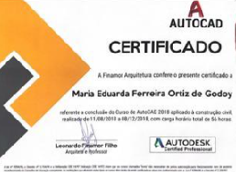
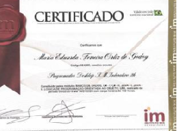
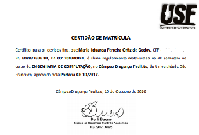
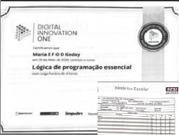

MAIN CERTIFICATES

AutoCad
Curso concluido na instituição Finamor Arquitetura em 2018, com carga horária de 56 horas.

Programador de Desktop
Curso concluido na instituição MIX em 2020, com carga horária de 132 horas.
Excel Avançado
Curso concluido na instituição Udemy em 2020, com carga horária de 11,5 horas.
Inglês
Curso em andamento na instituição Cintra.

Engenharia de Computação
Curso em andamento na instituição Universidade São Francisco, com formação prevista para 2023.

Outros[...]
Conhecimento em: Lógica de Programação; Pacote office; Eletroeletrônica; Power BI.